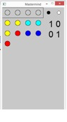
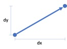
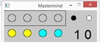
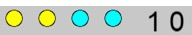
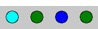
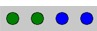

The game "Mastermind"
Mastermind is a board game whose objective is to guess a certain code, and which was invented in 1970 by Mordecai Meirowitz. The following figure shows the board [Wikipedia]:

The rules of the game are as follows:
· The code consists of 4 pins of different colors (typically 6), except black and white. In the image of the board, the key consists of the 4 pins at the nearest end, hidden from the player, who is at the far end;
· The player presents combinations of 4 pins until guessing or exceeding the number of possibilities (typically 12); In the board image, the first move is made up of the 4 furthest pins: yellow, yellow, blue, blue.
· With each move, the player is informed of how many pins have the right color and are in the right place (black pins, on the board image, red pins). And how many have the right color, but are in the wrong position (white pins). In the board image, the 4 pins of the first move are accompanied by 1 white pin. This pin indicates to the player that he has hit the color of a key pin, but the position is wrong. On the other hand, the pins of the sixth move are accompanied by 4 small red pins, which means that the player hit the key, that is, he hit the 4 colors and the 4 positions of the key pins.
1 Game setup
This game already has some complexity, so it will be useful to use the problem decomposition to better structure the game into subproblems.
This game requires some graphic functionality and we chose to structure it in p5, using the typical functions: setup()e draw().
In the image to the left, we see that the key is hidden, at the top, and that, after the first move (yellow, yellow, cyan, cyan), the computer indicates 1 black pin and zero white pins, which means that the player guessed the colour and position of one of the key pins.
You will need to import the p5 module as well as the random module to select the key at random.
from p5 import *
import random
Let's start by defining a tuple that represents the set of colors (CORES) and the number of pins that make up the key (DIM_CHAVE), as well as the diameter of the pin representation (DIAMETRO) and the maximum number of attempts to guess the key (MAX_JOGADAS):
CORES = ("red", "green", "blue", "cyan", "yellow", "magenta")
DIM_CHAVE = 4
DIAMETRO = 50
MAX_JOGADAS = 12
The DIAMETRO can be set to change the size of the board and game symbols.
|
|
The literal MAX_JOGADAS ends up defining the length of the game board because it defines the number of lines on the board (see the previous figure).
|
We also define some global variables, which represent the key to guess (chave), the player's current move (jogada), the representation of the board (tabuleiro)...
chave = None
jogada = [0]
tabuleiro = []
|
|
Variable chave will be a tuple, since once created it will not be changed. But since tuples are immutable, it will be initialized by None, which represents the absence of a value. The other two variables are lists, as they will change as the game progresses.
|
And two auxiliary variables ... The number of attempts remaining, which is initialized with MAX_JOGADAS.
tentativas = MAX_JOGADAS
And two Boolean variables that let you know if the game and the play have already ended.
terminou = False
jogou = False
Function setup()will have the following functionality :
1. Create the key as a random combination of 6 colors in a 4-pin sequence.
Using a counted loop (for) we create a tuple with 4 values (DIM_CHAVE) containing integer numbers from 0 to 5 (according to the 6 colors defined in CORES).
|
|
Variable chave will be changed, and being a global variable we need to indicate that in the beginning of the function block: global chave |
2. Define the size of the p5 graphic window, as well as the title ("Mastermind").
The size of the window can be calculated taking into account: the width depends on the number of pins and the space to place the number of black and white pins, which is considered equal to the width of 2 pins. The height of the window will depend on the maximum number of moves (1 line per move) + 1 line for the key. These dimensions are multiplied by the diameter of the pins.
3. Create a text font to display the number of black and white pins, type "Arial", size 42, aligned to the left and centered on the indicated coordinate.
Obs.: You will need to place the file "Arial.ttf" in the .py folder.
The code for function setup():
def setup():
global chave
# chave
chave = (random.randint(0,len(CORES)-1), )
for i in range(DIM_CHAVE-1):
chave = chave + (random.randint(0,len(CORES)-1), )
# janela
size(DIAMETRO*(DIM_CHAVE+2), DIAMETRO*(MAX_JOGADAS+1))
title("Mastermind")
# texto
f = create_font("Arial.ttf", 42)
text_font(f)
text_align("LEFT", "CENTER")
|
|
Function create_font()imports a vector font from a file, the function text_font() selects it as the current font and text_align()defines the alignment of text over the insertion point: For more information Typography on p5.
|
|
|
Throughout this tutorial we will use tuples as a primordial abstraction for the game, leaving lists only for situations that require mutable data structures.
|
2 Iterating through the game – the game loop
The game loop is performed through function draw() on module p5.
2.1 Input
In this implementation of the game, the player interacts with the keyboard (cursor keys: ¬, ¯, ®, ) to choose the colour he wants for each pin.
This subproblem will be developed through the function key_pressed() of module p5, as will be seen in point 3.
2.2 Game logic
We start by checking if the player has no more attempts (length of the board is equal to the number of attempts) or if the last move hit the key, in which case the game ends, with defeat or victory, respectively.
def draw():
global tabuleiro, chave, jogada , tentativas, terminou, jogou
# 2.2. logica de jogo
# verifica se jogo terminou
if len(tabuleiro)>0:
ult_jogada = tabuleiro[-1]
if ult_jogada[0:DIM_CHAVE] == chave or tentativas == 0:
terminou = True
|
|
Variable terminou is called a "flag" because it indicates a Boolean state In this case it indicates if the game is over or not. It will only be used to restrict the player's interaction with the game when it is finished.
This variable will be true if the player guesses the key on the last move, or if the number of attempts is exhausted (zero).
Observe how the last move is indexed: tabuleiro[-1]
|
The player can end the game by pressing "ESC" or closing the window.
Then, we check if the move is complete (player inserts fourth pin and presses the right key ®).
# verifica se a jogada já foi concluída pelo jogador
if jogou:
# acrescenta jogada ao tabuleiro com a respetiva pontuação
tabuleiro.append(tuple(jogada) + pinos(chave, jogada))
tentativas -= 1
jogada = [0]
jogou = False
In this case, the move (4 pins) + a pair of values (a tuple) with the number of black pins and the number of white pins is added to the board.
The number of remaining attempts (tentativas) is also decremented (subtract one), the next move is initiated with the red starting pin (index 0) and the move is unlocked (jogada = False).
How are the number of white pins and the number of black pins determined?
This is a subproblem that is solved by the function pinos(), comparing chave with jogada, and that will be explained later (section 4).
2.3 Output - visualization of the game board and the previous plays
The output (visualization) algorithm includes the following steps:
1. Erase the game window screen
For the visualization to be interactive, it is necessary to animate the selection of pins for each move, so it is always necessary to clear the game window screen with the function background().
# 2.3.1. Limpa o ecrã de jogo
background(200)
2. Draw the key (hidden)
The key is usually drawn only with empty circles, so as not to be revealed.
At the end of the game (in which variable terminou becomes true), the key is revealed with the correct colours.
# 2.3.2. desenha chave
fill(200)
# primeiro, desenha o retângulo que envolve a chave
rect((0,0), DIAMETRO*(DIM_CHAVE), DIAMETRO)
ponto = (DIAMETRO//2, DIAMETRO//2)
# chave, normalmente, escondida é visualizada através de círculos vazios.
# No final do jogo, a chave é visualizada com as suas cores.
for i in range (DIM_CHAVE):
if terminou:
# mostra chave no final do jogo
fill(CORES[chave[i]])
circle(move_ponto(ponto, i*DIAMETRO, 0), DIAMETRO//2)
|
|
You must have noticed that in this code we use an auxiliary function, move_ponto(). It is a function that receives a point (tuple of two values - its coordinates) and that returns a point, displaced by a vector, as shown in the following figure.  The function, to be defined at the beginning of the file, is as follows: def move_ponto(ponto, dx, dy): x = ponto[0] y = ponto[1] return (x+dx, y+dy) |
3. Feedback - the B&W pins
Below is the code of the representation of the white and black pins - black circle and white circle.
# 2.3.3. legenda para os pinos
fill(0)
circle(((DIM_CHAVE+0.5)*DIAMETRO, DIAMETRO//2), DIAMETRO//3)
fill(255)
circle(((DIM_CHAVE+1.5)*DIAMETRO, DIAMETRO//2), DIAMETRO//3)
|
|
Observe that both "white" and "black" have the three identical RGB components, so just enter one value. "Black" corresponds to the absence of colour (value 0). The "white" corresponds to the maximum colour intensity (value 255). |
4. Previous moves and current move
For each line on the board, display the moves made, including the 4 pins and the number of black and white pins.
# 2.3.4. desenha jogadas anteriores
for linha in tabuleiro:
ponto = (DIAMETRO//2, ponto[1]+DIAMETRO)
for i in range(DIM_CHAVE):
fill(CORES[linha[i]])
circle(ponto, DIAMETRO//2)
ponto = move_ponto(ponto, DIAMETRO, 0)
# pinos P&B
fill(0)
text(str(linha[-2])+" "+str(linha[-1]), ponto)
|
|
Note that the tuple for each move has six values:
The four pins of the move and the number of blacks and whites:  The previous line composes the numbers in a text string to be displayed to the right of the 4 pins: " 1 0" The value of B is linha[-2] and the value of W is linha[-1]. The penultimate and the last value of the tuple. Function text()draws this string of characters centered on ponto. |
In the case of the current move, while the player chooses the colours of each pin, the number of pins defined varies from 1 to 4...
# 2.3.5. desenha jogada atual
if not terminou:
ponto = (DIAMETRO//2, ponto[1]+DIAMETRO)
for pino in jogada:
fill(CORES[pino])
circle(ponto, DIAMETRO//2)
ponto = move_ponto(ponto, DIAMETRO, 0)
The current play is only displayed if the game has not ended.
3 Interaction with the keyboard
The function that receives the events caused by the keyboard is the function key_pressed().
Variable key stores the value of the key pressed. Multiple selection allows you to assess whether the player has pressed any of the cursor keys.
· ® add / selects the pin on the right;
If there are already 4 pins, pressing ® ends the move of the player (variable jogou becomes True).
· ¬ selects the pin on the right;
· changes pin color to the next;
· ¯ changes pin color to the previous.
When the game is over (an empty list is played) the player can no longer interact. The function returns before selecting the keys.
# controla a interação com o utilizador através do teclado
def key_pressed():
global jogada, terminou, jogou
# se jogo terminou não permite jogar
if terminou or jogou:
return
# verifica teclas premidas
if key == "UP":
jogada[-1] = (jogada[-1] + 1) % len(CORES)
elif key == "DOWN":
jogada[-1] = (jogada[-1] - 1) % len(CORES)
elif key == "LEFT":
if len(jogada)>1:
jogada.pop()
elif key == "RIGHT":
if len(jogada) < DIM_CHAVE:
# acrescenta pino
jogada.append(0)
else:
# ou termina jogada
jogou = True
4 Determine how many pins are right
Taking into account the complexity of the problem of calculating the number of right pins in the right position and the right pins but in the wrong position, we have developed function pinos(). This function has two parameters: chave and jogada.
The algorithm of this function has two main steps, followed by the return of the function with a pair of values (a tuple with 2 values):
def pinos(chave, jogada):
1. Determine the number of pins of each color in the players move and that exist in the key, even if in the wrong position. For this, the minimum between the occurrences of the colour in the key and the players move is calculated, using the count() function.
pinosB = 0
for i in range(len(CORES)):
pinosB += min(chave.count(i), jogada.count(i))
2. Determine the number of right pins in the right position (black pins), checking the correspondence of the 4 color positions in the chave and jogada.
pinosP = 0
# 2.1. verifica se jogo terminou
for i in range(4):
if chave[i] == jogada[i]:
pinosP += 1
3.
Finally, a pair of values is returned with the
number of black and white pins.
Notice that the number of white pins is obtained by subtracting the black pins
to those calculated in the first step.
return (pinosP, pinosB-pinosP)
|
|
Did it look a little confusing? Note the following example Consider the following key:  And the following player's move:  First, we start by counting the pins of each colour that exist in the key: pinosB = 2 green + 1 blue + 0 cyan = 3
Then we check the ones that have the right colour and are in the right position: pinosP = 2
The final number of pins will then be: B = pinosP = 2 W = pinosB-pinosP = 3 - 2 = 1 |
Do not forget to put the following code at the end of the file:
if __name__ == '__main__':
run()
|
|
Since this tutorial is part of the chapter that refers to tuples, it is natural to use this data abstraction. But is it the only solution? There are others, such as lists, which you will explore in the next chapter. The reason why they were used in Mastermind is that both the key and the colours of the game pieces, and each move, are immutable. That is, it is not convenient for these data to be changed throughout the game. But on the other hand, the board is dynamic throughout the game ... and so it was implemented as a list.
Review the game again and look at these data structure options.
When exploring the lists in the next chapter, try to assess the advantages and disadvantages of tuples. |
5 Final challenge
Add the possibility of using the keys "1" to "6" to choose the colour directly. Also draw the complete board, with unfilled circles.
|
|
Share your game!
|